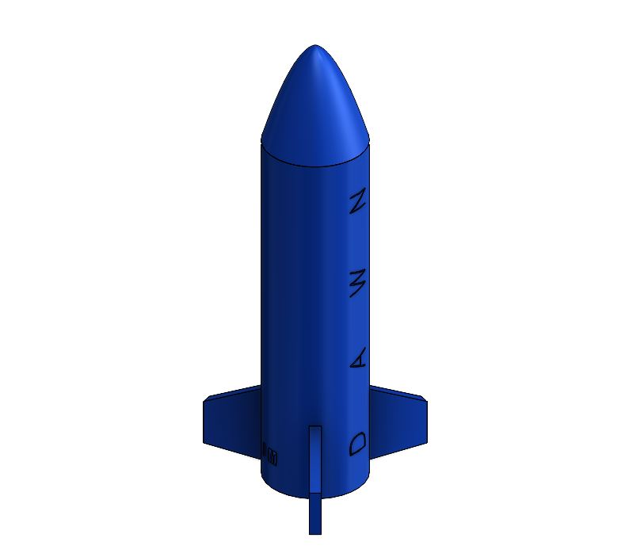
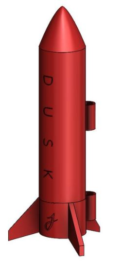
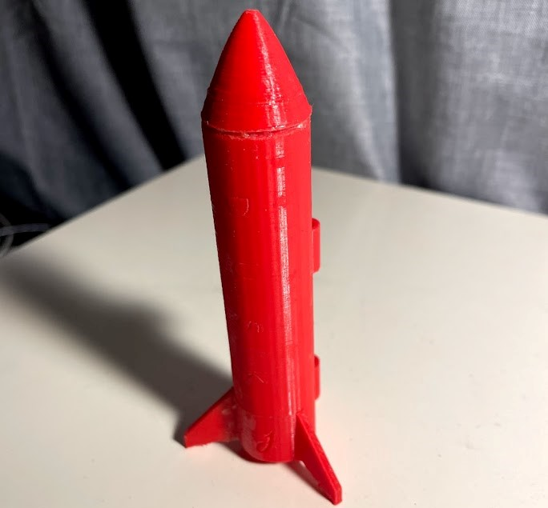
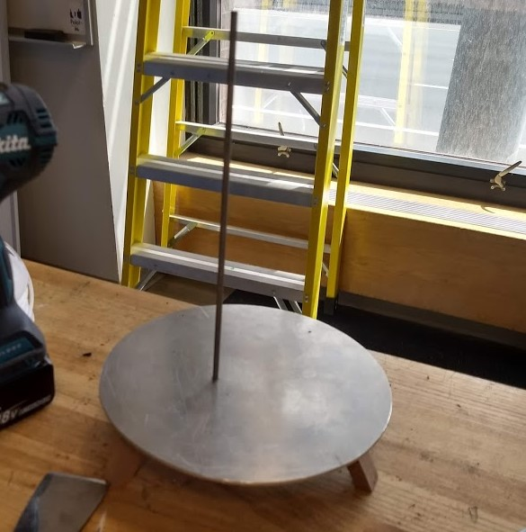
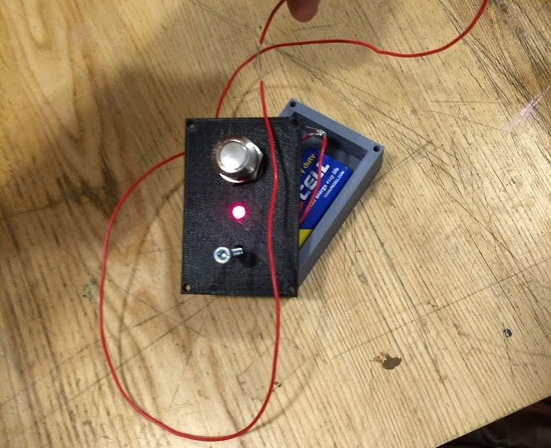
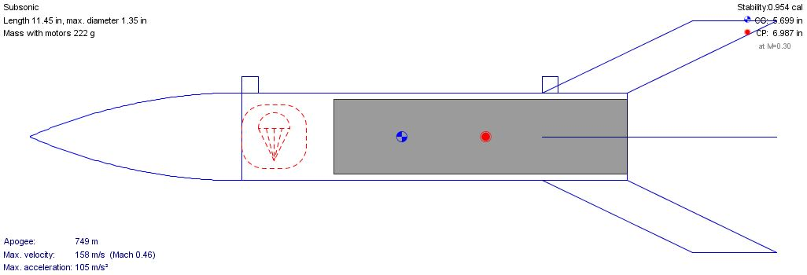
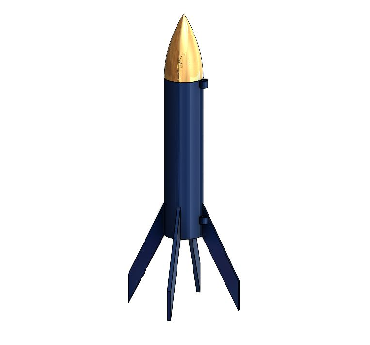
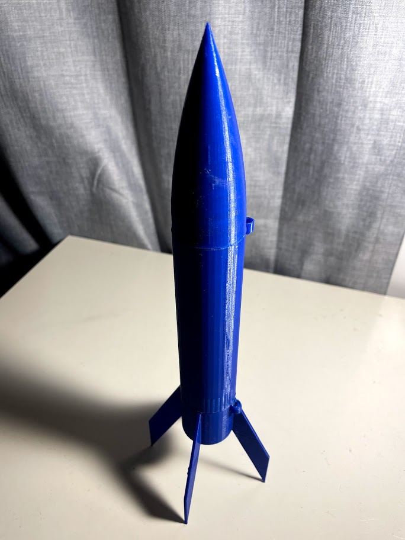
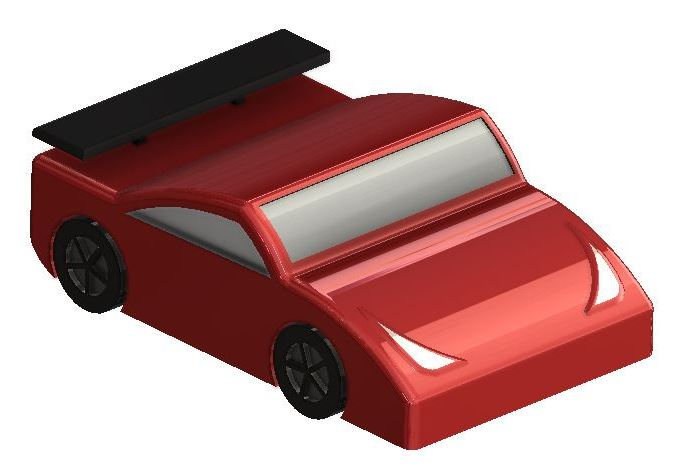
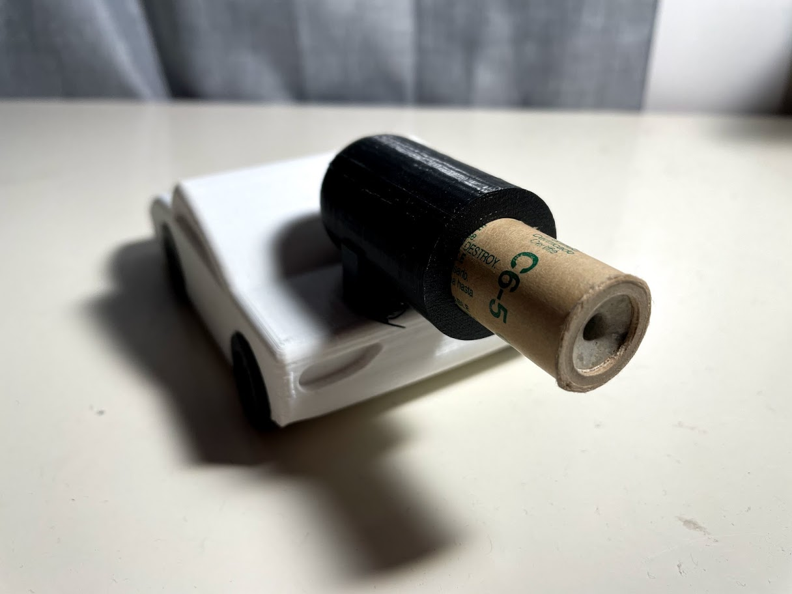

Though model rockets are simple compared to rockets developed in industry and even rockets developed in college teams, I gained early design experience in high school developing 3D printed model rockets with CAD and OpenRocket. Launching these miniature rockets also solidified my interest in rocketry and was key to my decision to join the Boston University Rocket Propulsion Group, which has given me the resources to take my initial knowledge of model rocketry and expand it into experimental liquid rocketry.
My first design and launch was a C-class rocket in my senior year of high school in Spring 2018. I started with a small, safe, no-frills rocket that could be rapidly iterated with my school's limitations in 3D print size; I sized the rocket diameter for the smallest 18mm motors, limiting my selection to A, B, and C-class motors. To simplify the development, I decided to have the lightweight rocket fall back with a tumble recovery.
I based the general shape of the rocket off of researching commercial model rockets. In OpenRocket I deisgned the vehicle to be as lightweight as possible to maximize the apogee, by shortening the length, reducing the wall thickness, and optimizing the nose and fin shape. To further maximize the apogee, I chose a C-class motor. From the OpenRocket design, I modeled the rocket in Autodesk Inventor, which was sponsored by my high school as my first CAD program. Splitting the rocket into individual components of nose cone, fins, and body for ease of printing, I loaded them into .STL files and printed them using the school's Flashforge Dreamer.
A setback came in assembling the vehicle. Lacking experience in designing for additives, my first attempts to print the rocket came out in either failed prints or loose assemblies. Eventually, I learned to separate the rocket into three components: the nose cone, the body tube, and the fin can. Initially I tried to print the fins separately from the body to epoxy them on later, only for them to fall off under low stresses. The solution to print the fins together onto a fin can made assembly trivial.
CAD model of the C-class rocket (Dawn).
In June 2018 I was able to launch the rocket, which I named Dawn as the "dawn" of my experience in rockets. While it was on a clear day in a grass field, the rocket was unfortunately unstable and veered into an angled trajectory. It tumbled to the side due to a non-perpendicular launch angle along with poor weight distribution in the vehicle design. The tumble recovery also led to a fin breaking off during the landing. Gluing the fin back on, I attempted to launch Dawn a second time as a control to determine if I had operated the launch mechanism incorrectly, but the same uncontrolled ascent occurred; this time it was further unstable due to the broken fin.
Inaugural launch of C-class rocket (Dawn).
Having reduced the weight of the vehicle so much to optimize the apogee, I never considered stability or thrust-to-weight ratio as a factor of launch conditions, so the launch taught me the critical importance of performance metrics other than apogee and speed. Nevertheless, I was excited to see my scratch-built rocket launch even if it was a technical failure. It remains my first real engineering project and a memorable day from high school. I had planned to research more into the OpenRocket design to determine the cause of the loss of control, as I still had a third motor. However, though I redesigned the rocket, I was out of time as the semester closed and was unable to build the new design, renamed Dusk. The rocket had a lengthened body for better stability and a lower thrust-to-weight ratio, and a parachute system for recovery that could be stored in the longer body. I intended to build it in college and then bring it back to launch over the summer.
 (a) CAD of revised C-class rocket (Dusk). (b) Assembled build of Dusk.
After freshman year of college and having learned more rocketry fundamentals, I wanted to launch an even more refined design to apply my learning, instead of launching Dusk. Having learned more about hands-on work like machining and circuits, I also built my own launch pad and controller. The launch pad is a metal disc with wood-cut legs and a steel launch rod. The launch controller, like commercial launch controllers, sends a current to motor igniters, and also contains a safety key in series. With modularity in mind, this system can be reused for any model rocket.
(a) Custom machined launch pad with 3/16" rail. (b) Custom wired launch controller with safety key.
I chose mid-powered F-class motors as they are the strongest motor that I could purchase with Boston University's order system. I was confident that I researched enough about the design to build a powerful, but controlled, vehicle. I wanted to launch a rocket that could push my limits in model rocketry
Once again designing around the motor, I designed it with a similar shape as Dusk, except it was larger. Once again I minimized weight while maximizing apogee, but now I kept stability around the recommended 1 caliber by adjusting the mass distribution when needed. I modeled it in Solidworks and printed using a Prusa i3 in PLA. The rocket again used the assembly method of nose cone, body, and fin can, fixed by epoxy.
(a) CAD model of F-class rocket. (b) Assembled build of F-class rocket.
The parachute system is a plastic sheet attached to the rocket with nylon fishing lines. I sized the parachute with a calculator to be 22 inches in a diameter, based on the surface area needed to critically reduce the velocity of an object of the mass. To test the feasibility of this system, I attached a plastic sheet to the older model rocket Dusk and dropped it off of my balcony, successfully slowing down the fall to a velocity that did not damage the assembly.
Balcony drop test of parachute of Dusk.
After designing the F-class rocket, I had one C-class motor left over from high school. To further my experience with motors, I developed a horizontally-propelled vehicle. In Solidworks, I modeled a car with an aerodynamic chassis, an aft rocket motor mount, and functional wheels and axes. I rapidly iterated the 3D printed to find the tolerance for the wheels to roll with minimum resistance and maximum stability. Similar to the rockets, I used epoxy to assemble the vehicle. I launched the car down a long asphalt road on my college campus, Cummington Mall, where few people walk down on weekends.
